Södermalm i tid och rum
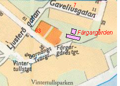
Barnängsgatan. Färgargården. Gaveliusgatan. Ljusterögatan.
Kartor: 1733, 1885, 1902, 1922, 1996
{kind=link}
{kind=link}
{kind=link}
{kind=link}
{kind=link}
Gaveliusgatan
Gatan hette först Barnängsgatan. 1885 års namnrevision gav den namnet Barnängstvärgatan. År 1922 föreslog namnberedningen att gatunamnet skulle bli Gaveliusgatan efter Jacob Larsson Gavelius, adlad Lager stedt (1655-98) »den kände klädesfabrikören, som härstädes i slutet av 1600-talet anlade den fabrik, som bl.a. försåg svenska krigsmakten med ett utmärkt kläde«.
Gaveliusgatan 5 A uppfördes 1802 som fabriksbyggnad men ombyggdes 1852 till bostäder. Hopbyggda med stenhuset Gaveliusgatan 5 B från 1769 är två trähus uppförda vid 1700-talets början. Fastigheten förvärvades av staden 1932. Gaveliusgatan 5 A är senast ombyggd 1987 och Gaveliusgatan 5 B under 1998.
Till den lantligt belägna Faggens krog begav sig naturligtvis också vår nationalskald Bellman. I Fredmans Epistel n:o 55 skildrar han Mollbergs kägelspel hos Faggens midsommaraftonen 1770.
|
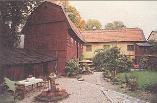 Faggens krog 1997. Gårdssidan från söder. Stenhuset byggdes om och moderniserades 1998. Träbyggnaden till vänster är från 1700-talets början.  Nutid 2002
Nutid 2002
|
Stundom hans bild skyms af de ekar som på gål'n kring Kägelbanan stå; Stängd i en vrå Står ban och pekar Midt bland dem som käglor slå, Stiger på tå, Grälar ocb nekar Att i slaget ramla två.
Mollberg gutår! hör Näktergalen |
Vem var då Fagge? Jo, Petter Faggeden äldre blev ägare till fastigheten 1702. Han var trädgårdsmästare och anlade den trädgård av vars produkter hans familj skulle leva. Två år efter Petters död 1731 fick sonen med samma namn tillstånd »att få sälja dricka åt främmande, som komma till honom«. Verksamheten blev efter hand mer lönande än trädgården.
|
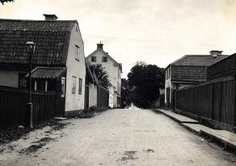 Till vänster Barnängstvärgata 5-7 (Gaveliusgatan 3-7) i kvarteret Riset. Till höger nr 2 i kvarteret Melonen. Nr 5 är känd som Faggens krog. I nr 7 i bakgrunden låg Stockholms stads uppfostringsanstalt för flickor. 1920-1929
|
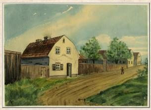 Faggens krog, akvarell. Henrik Reuterdahl, 1890 |
Eric Nordström var »Ulla Winblads« svärfar. Det är den Ulla som Bellman i sin diktning kallar »Nymph och Prästinna i Bacchi Tempel«. Ulla Winblad hette egentligen Maria Christina Kiellström. Svärfadern Eric Nordström hade tidigare varit trädgårdsdräng i Daurerska huset vid dåvarande Björngårdsbrunnsgatan, nu Bellmansgatan. Carl Michael Bellman föddes i det huset 1740.
|
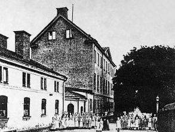 |
Barnängs Tvärgata 7 (Gaveliusgatan 7) |
Den första kände färgaren inom Barnängsområdet var Hans Westman som började sin verksamhet på 1680-talet och dog 1713. En annan känd färgare var . Han lät 1770 uppföra den vackra malmgård, som ännu står på Liljeholmens stearinfabriks tidigare område.
|
Färgargården Färgargårdsområdet hette förr kv. Vintertullen större. Sedan slutet av 1600-talet och fram till 1920-talet bedrevs här färgeriverksamhet knuten till Barnängens fabriker. Verksamheterna höll till i ett flertal hus med olika funktioner. Ännu på 1920-talet fanns många hus kvar och färgningen bedrevs enligt gamla traditionsrika metoder. I samband med att Hammarbyleden anlades revs allt utom den kvarvarande bostadslängan och stenhuset. Trähuset uppfördes på 1730-talet som fabriksbyggnad men byggdes om till bostadshus omkring 1775. Stenhuset byggdes 1765. Den långa bostadslängan är timrad i två våningar. Väggarna är klädda med stående panel med inklädda knutningar. Bottenvåningen innehåller två bostadslägenheter, var och en med sin ingång. De är skilda åt genom en vägg och den gemensamma spismuren. Inredningssnickeriet, enkelt men vårdat, är av 1700-talskaraktär, närmast gustavianskt, som t.ex. de tre ytterdörrarna. Bostadslängans övervåning upptas i nästan hela sin längd av ett enda rum, den s.k. ramvinden. Det är platsen för de långa ramar, i vilka tygstycken spändes upp för att torka.
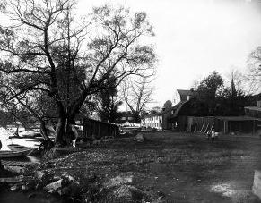 Barnängstvärgränd 8 (Barnängsvägen 40) från öster 1907. Till höger Färgargården, till vänster Hammarby sjö. |
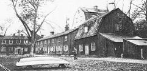  Färgargården vid Barnängen. Själva färgeriet har numer försvunnit, bostadslängan mitt i bilden står kvar. Foto i Vårt Stockholm 1920. Färgargården vid Barnängen. Själva färgeriet har numer försvunnit, bostadslängan mitt i bilden står kvar. Foto i Vårt Stockholm 1920.
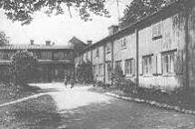  Färgargårdens bostadshus ca 1915. Färgargårdens bostadshus ca 1915. Trähuset till höger från 1730-talet byggdes redan 1775 om till bostäder.
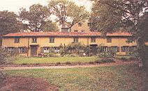  Nutid 2001 Nutid 2001
Bostadslängan och stenhuset i bakgrunden är det enda som idag återstår av Färgargårdsanläggningen. 1997
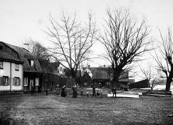 Samma motiv som på bilden till vänster fast från väster.
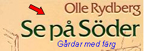 |
|
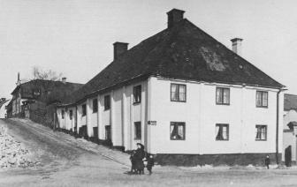  Tullgårdsgränd 1907, sedd från Värmdögatan. Tullgårdsgränd 1907, sedd från Värmdögatan. Första huset till höger är Värmdögatan 63. Huset längst upp i gränden med gaveln hitåt är Faggens krog. |
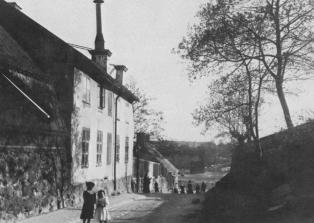  Tullgårdsgränd 1909, sedd från öster motVärmdögatan. Tullgårdsgränd 1909, sedd från öster motVärmdögatan. Sista huset till vänster är Värmdögatan 63. |